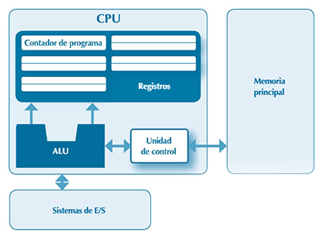

1.1. Programas y procesos
Un programa contiene un conjunto de instrucciones que se pueden ejecutar directamente en una máquina. Esta puede ser una máquina física o, en el caso del lenguaje Java, una máquina virtual. Un programa es un objeto estático, normalmente almacenado en un fichero binario en un medio de almacenamiento secundario, como, por ejemplo, un disco duro.
Un proceso corresponde a una instancia de un programa en ejecución. Un proceso es una entidad dinámica. La ejecución de un programa comienza con la creación y ejecución de un proceso, y un proceso puede crear nuevos procesos sobre la marcha.
Para ejecutar un programa, primero debe cargarse en la memoria. Durante su ejecución, un programa utiliza diversos recursos del sistema:
Consta de una secuencia de celdas de memoria, todas con la misma longitud en bits, y cada una identificada por su posición. Antes de comenzar su ejecución, un programa debe cargarse en un bloque de la memoria principal, que se asigna al proceso que se crea para ejecutar el programa. Este proceso también puede obtener más memoria, dinámicamente, durante su ejecución.
Ejecuta el proceso que se crea una vez cargado en la memoria. El procesador guarda, en un registro especial, el contador de programa (PC o program counter), la dirección en la memoria de la instrucción que se está ejecutando. Un bus de datos no puede operar directamente con los contenidos de la memoria. Estos deben antes traerse de ella y cargarse en registros del procesador. Las operaciones se realizan en una unidad aritmético-lógica o UAL (en inglés, arithmetic and logical unit o ALU). Su resultado se obtiene en un registro desde el que se puede transferir a una posición de la memoria.
Los procesos comparten los dispositivos de E/S. Debe guardarse información acerca de a qué procesos se les ha otorgado acceso a un dispositivo de E/S, y del estado de las operaciones realizadas sobre él.
Toda la información asociada a un proceso se guarda en un bloque de control de proceso (en inglés, PCB o process control block). Si el mismo programa se ejecuta varias veces, se creará cada vez un nuevo proceso, y cada uno tendrá su propio PCB.
Un proceso puede crear nuevos procesos durante su ejecución, que pueden, a su vez, crear nuevos procesos. De esta forma, a partir de un proceso inicial puede crearse una jerarquía de procesos.